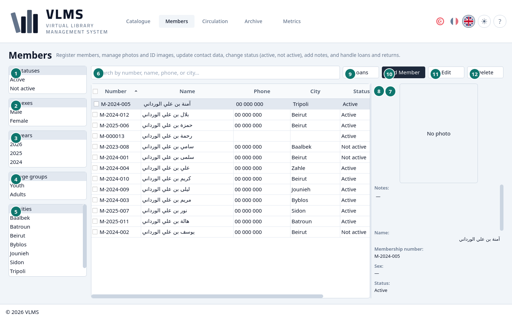
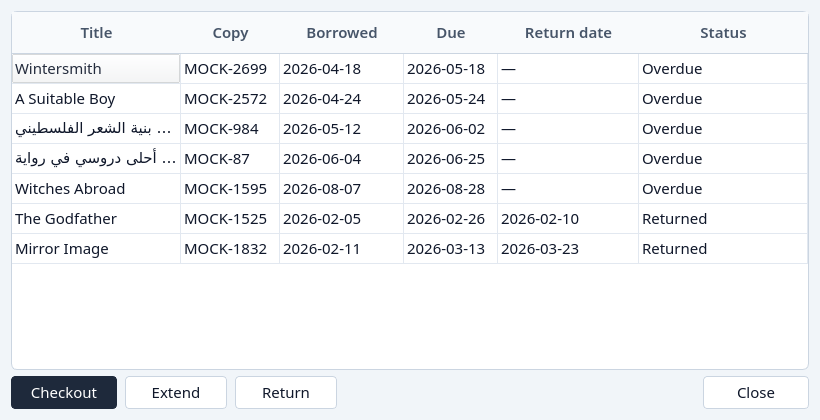
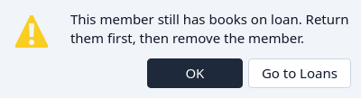

Members
Find a member, read their status, and open their loans.
Members lists the people registered with the library. Archived members are on the Archive screen.


- Status, from All statuses: Active, Not active, or both. See Member status.
- Sex, from All sexes.
- The year of inscription, from All years.
- Age group, from All age groups: Youth or Adults.
- City, from All cities.
- Search, by name, membership number, phone, or occupation.
- Loans — every loan this member has ever had, archived loans included.
- The details of the highlighted member.
- Loans
- Add Member
- Edit
- Delete
The filter lists have no headings. The first line of each, All statuses, All sexes, All years, All age groups, or All cities, says what it filters. Pick one or more entries under that line to narrow the list. The filters combine.
Circulation and the Archive use the same lists to filter loans by their member. There the year is the year of the loan.
Details
The panel shows the membership number, the status, the last active day, and the contact fields, with the photograph and the identity image when they were stored.

Loans
Loans opens this member's history, including loans that have been archived. It opens even when the member has never borrowed, and Checkout is there for an active member.


Delete
Delete archives the member. It is refused while any loan of theirs is still out. The message offers Go to Loans, which jumps to Circulation with that membership number filled in, so the copy can be returned first.


Answer with OK to stay here. Registering and renewing are Register a member. The rest of removal is Remove.